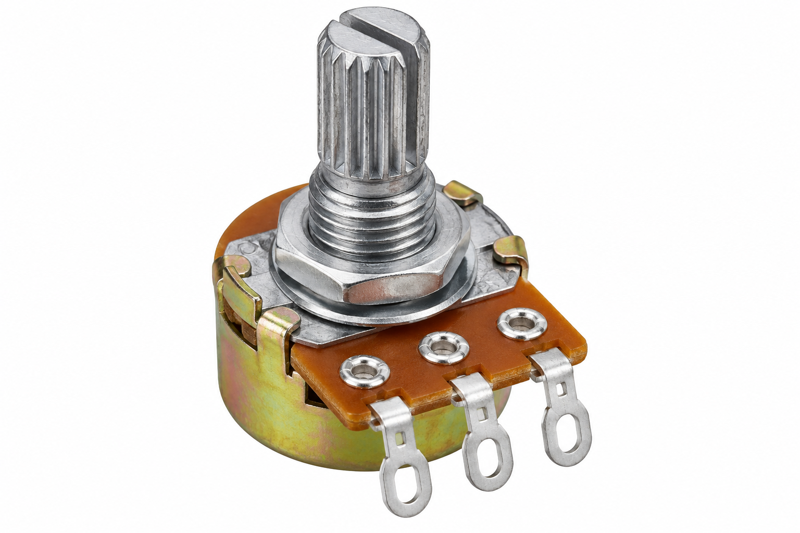

ESP32_Potentiometer_Web_Monitor.ino

ESP32 Potentiometer Web Monitor

To create an ESP32-based potentiometer monitoring system that reads the knob position through an analog input, displays the reading on an SSD1306 OLED, and sends live data to a Wi-Fi dashboard.
The Potentiometer Web Monitor demonstrates analog input measurement using an ESP32 DevKitC microcontroller.
A potentiometer is a variable resistor. Turning its knob changes the voltage at its middle terminal.
The middle terminal is connected to GPIO34, which is used as an analog input.
The ESP32 reads this voltage using its Analog-to-Digital Converter (ADC).
With a configured 12-bit resolution, the ADC produces readings from 0 to 4095.
The program converts the raw reading into a percentage between 0% and 100%.
The SSD1306 OLED displays the percentage, ADC reading, and a graphical progress bar.
The ESP32 connects to Wi-Fi and hosts a web dashboard that displays the potentiometer position in a browser.
The dashboard also shows the raw ADC reading, percentage, and a continuously updating graph.
The percentage represents the relative potentiometer position derived from the ADC.
Actual ADC readings may show noise and may not reach exactly 0 or 4095.
The potentiometer must be supplied with 3.3V and GND so its signal remains within the ESP32 input range.

Main controller with built-in Wi-Fi.

Provides an adjustable analog voltage.

Displays percentage, ADC value, and a progress bar.

Provides convenient connections for the experiment circuit.

Used to connect the ESP32, potentiometer, and OLED.
Install Adafruit GFX and Adafruit SSD1306 libraries using Arduino IDE.
| Component | Terminal | ESP32 Connection |
|---|---|---|
| Potentiometer | Outer Terminal 1 | 3.3V |
| Potentiometer | Outer Terminal 2 | GND |
| Potentiometer | Middle Terminal / SIG | GPIO34 |
| OLED Pin | ESP32 Connection |
|---|---|
| VCC | 3.3V |
| GND | GND |
| SDA | GPIO21 |
| SCL | GPIO22 |
| Parameter | Value |
|---|---|
| Potentiometer Signal | GPIO34 |
| OLED SDA | GPIO21 |
| OLED SCL | GPIO22 |
| OLED Address | 0x3C |
| ADC Resolution | 12-bit |
| ADC Range | 0 to 4095 |
| Web Server Port | 80 |
| Dashboard Refresh | 500 milliseconds |
GPIO34 is an input-only GPIO suitable for reading analog signals.
Connect the potentiometer's two outer terminals to 3.3V and GND. The middle terminal connects to GPIO34.
Swapping the two outer terminals reverses the direction in which the reading changes when the knob is rotated.

Turning the potentiometer changes the voltage on its middle terminal.
The ESP32 converts the analog input voltage into a digital reading using analogRead().
The ADC reading is mapped from 0–4095 into a percentage from 0–100%.
Percentage = map(ADC, 0, 4095, 0, 100)
The OLED shows the percentage, raw ADC value, and corresponding progress bar.
The ESP32 hosts an HTTP web server. A browser displays the current potentiometer reading.
JavaScript requests updated sensor data from the /data endpoint every 500 milliseconds.
The dashboard updates the displayed percentage, progress bar, and graph without reloading the page.
ESP32 Experiment · Code Review
Select an explanation to highlight its corresponding source-code section. Copy Code copies the complete ESP32 sketch.
Click any explanation to highlight its matching source-code lines in blue.
The ESP32 uses an Analog-to-Digital Converter to read the potentiometer.
A 12-bit ADC reading ranges from 0 to 4095.
map() converts the ADC reading into a percentage.
constrain() ensures the result stays between 0 and 100.
The OLED uses GPIO21 for SDA and GPIO22 for SCL.
The ESP32 returns potentiometer readings as JSON through the /data endpoint.
Try It: Rotate the potentiometer from minimum to maximum and observe the percentage, OLED progress bar, and wireless dashboard graph.
ESP32 POT MONITOR ------------------------ 51% ADC:2088 [##########----------]
Connecting to WiFi... WiFi connected! IP Address: 192.168.x.x Web server started!
| Parameter | Example Value |
|---|---|
| ADC Reading | 2088 |
| Potentiometer Position | 51% |
| Input GPIO | GPIO34 |
| Wi-Fi | Connected |
| Graph Update | 500 ms |
{
"raw": 2088,
"percent": 51
}
The Potentiometer Web Monitor demonstrates analog input monitoring using ESP32 GPIO34.
The raw ADC reading is converted into a percentage and displayed on the OLED with a graphical progress bar.
The ESP32 web dashboard displays the reading wirelessly and updates its graph in real time.